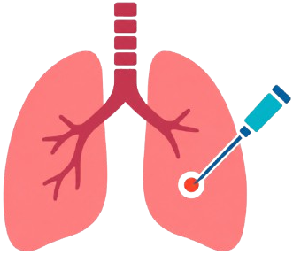
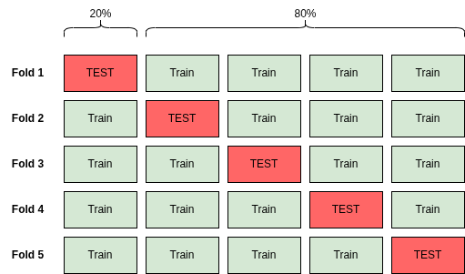
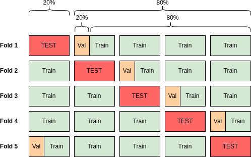
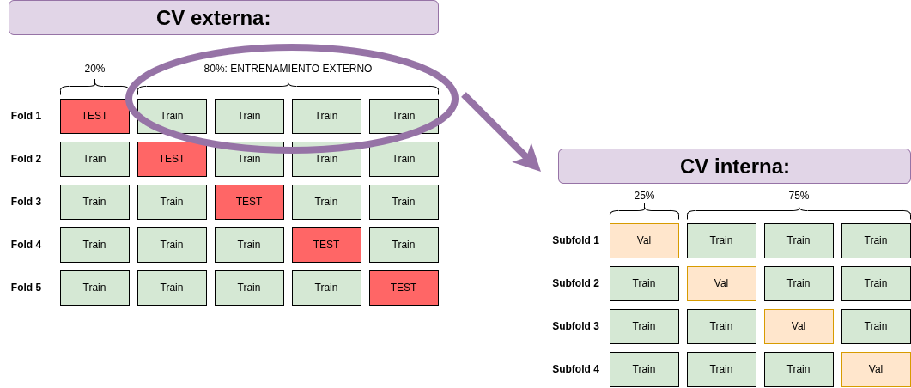

Gradient Boosting con características clínicas y radiómicas.
Trabajo Fin de Máster · Ciencia de Datos
Técnicas avanzadas de Inteligencia Artificial para predicción y caracterización de complicaciones en biopsias pulmonares

Resultados clínicos estudiados
Tras una biopsia pulmonar pueden aparecer distintas complicaciones. El estudio modela dos de ellas de forma independiente y deriva la ausencia de ambas.
HemorragiaSangrado posterior al procedimiento
NeumotóraxPresencia de aire en el espacio pleural
Sin complicaciónAusencia simultánea de las dos complicaciones
Visión general
Resultados principales
Comparación sintética de los enfoques seleccionados.
ResNet-18 con selección interna de umbrales.
Bagging PU con representación combinada.
Etiquetado negativo ingenuo con representación combinada.
Comparador
Modelos multietiqueta seleccionados
Preprocesamiento
Limpieza clínica, preprocesamiento volumétrico y segmentación anatómica.
Representaciones
Variables clínicas, geometría, radiómica y volúmenes tridimensionales.
Modelado
Modelos radiómicos, redes 3D, fusión multimodal y transfer learning.
Caracterización
Descubrimiento de subgrupos y obtención de reglas interpretables.
Explicabilidad
Análisis de características y regiones relevantes mediante SHAP y Grad-CAM.
02 · Radiómica
Características cuantitativas de imagen
Modelos clásicos entrenados con descriptores de intensidad, forma y textura, solos o combinados con información clínica y geométrica.
Mejor configuración global
R07 · Gradient Boosting
La configuración combina características radiómicas básicas de pulmón, nódulo y vasos con variables clínicas.
- F1 micro
- 0,4948
- F1 macro
- 0,5011
- Subset accuracy
- 0,6000

Tabla interactiva
Configuraciones destacadas
| ID | Modelo | Características | Datos adicionales | Máscaras | F1 micro | F1 macro | Subset acc. |
|---|
Selecciona una cabecera para ordenar. P: pulmón; N: nódulo; V: vasos; B: tráquea y bronquios.
Desglose por resultado
Resultados por etiqueta y ausencia de complicación
| ID | Modelo | Datos adicionales | Precisión | Sensibilidad | F1 | Especificidad |
|---|
Media ± desviación estándar entre las cinco particiones. «Sin complicación» se deriva de la ausencia simultánea de hemorragia y neumotórax; no es una tercera salida del modelo.
03 · Deep learning
Aprendizaje de volúmenes 3D
Comparación entre modelos basados únicamente en imagen, fusión con variables clínicas y transferencia de aprendizaje.

Resultados
Mejor configuración por arquitectura
Análisis.La fusión multimodal y el preentrenamiento no produjeron una mejora consistente frente a los modelos entrenados únicamente con imagen.
04 · PU learning
Incertidumbre en las etiquetas negativas
Se comparan referencias supervisadas y métodos que modelan explícitamente los casos positivos y no etiquetados.
Experimento tabular
Formulaciones por representación
| Representación | Formulación | AP | AUC | F1 | Sens. | Esp. | G-mean | MCC | Brier |
|---|
AP: average precision; AUC: área bajo la curva ROC. Un Brier menor indica menor error probabilístico.
Extensión 3D
PU learning sobre volúmenes
La comparación incluye entrenamiento supervisado, corrección Elkan-Noto y nnPU con una ResNet-18 tridimensional.

05 · Descubrimiento de subgrupos
Reglas interpretables
Patrones descriptivos que caracterizan grupos concretos. Las reglas pueden solaparse y no implican causalidad.
Análisis exploratorio
Modelo general frente a especializado
Diferencia de F1 micro dentro de cada subgrupo. La selección de reglas y la evaluación se realizaron sobre la misma cohorte, por lo que el análisis es exploratorio.
06 · Explicabilidad
Cómo se construyen las predicciones
Grad-CAM permite estudiar regiones de atención en los modelos 3D. SHAP resume la contribución de las características radiómicas.
Modelos tridimensionales
Mapas Grad-CAM
En cada composición, la primera columna muestra el corte de TC, la segunda el mapa para hemorragia y la tercera el mapa para neumotórax. El contorno blanco delimita el nódulo y los colores cálidos indican una contribución positiva relativa mayor.
Modelos radiómicos
Valores SHAP
Las distribuciones globales muestran la dirección de las contribuciones y los gráficos de importancia resumen su magnitud media.
07 · Conclusiones
Análisis de resultados
Rendimiento limitado
Los resultados no respaldan una capacidad predictiva suficiente para una aplicación clínica. La radiómica obtuvo la mejor síntesis global, con diferencias reducidas respecto a los modelos tridimensionales.
Más modalidades no garantizan mejora
La incorporación de variables clínicas a los modelos 3D y las estrategias de transferencia no mejoraron de forma consistente el rendimiento.
PU depende del contexto
Las ventajas relativas de las formulaciones PU variaron según la complicación y la representación. La extensión tridimensional presentó una variabilidad elevada.
Subgrupos exploratorios
Las reglas permiten describir perfiles locales, pero su estabilidad y el tamaño de la cohorte exigen una interpretación prudente y validación independiente.